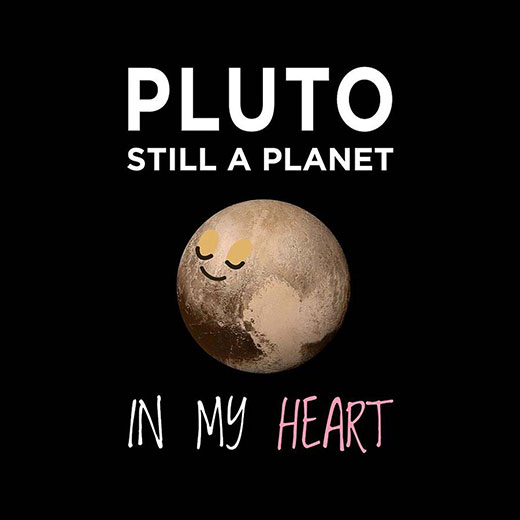

The Naming Continued cycle of naming planets after Roman gods. Pluto gets its name from the Roman god of Death.
The Reclassification On August 24th 2006, the International Astronomical Union (IAU) demoted Pluto from planet status to that of a new classification - Dwarf Planet.
The Culture Shock  ~ One of today's great generational gaps: whether you think Pluto is a planet ~ What's so great about being a planet?